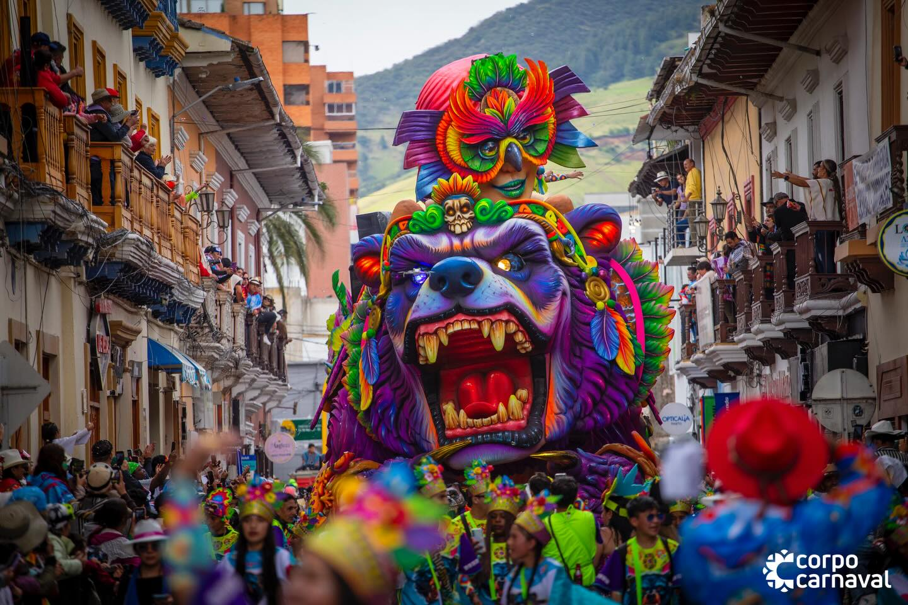
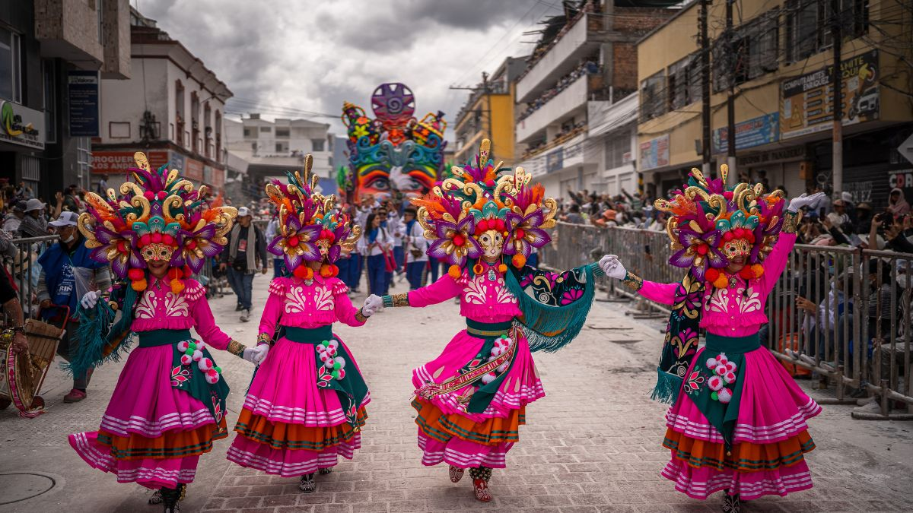
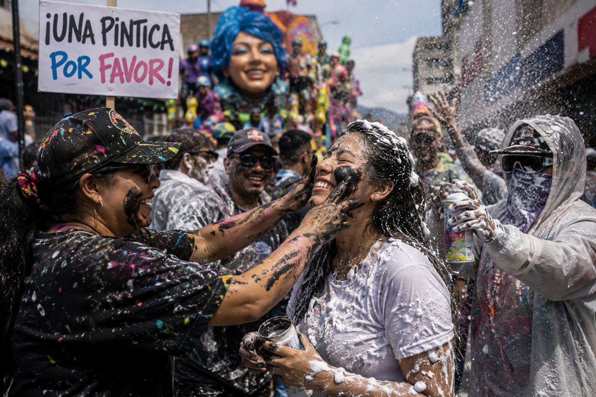
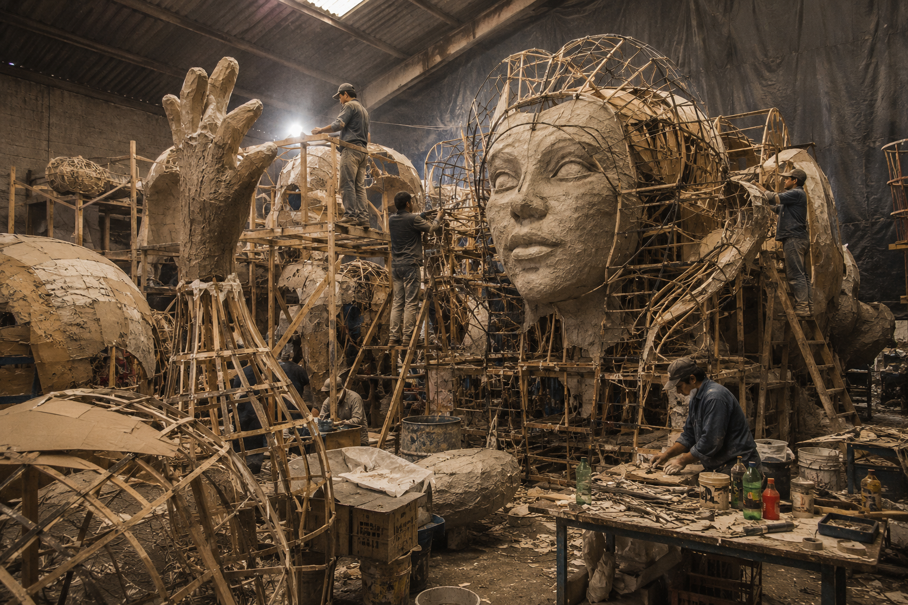
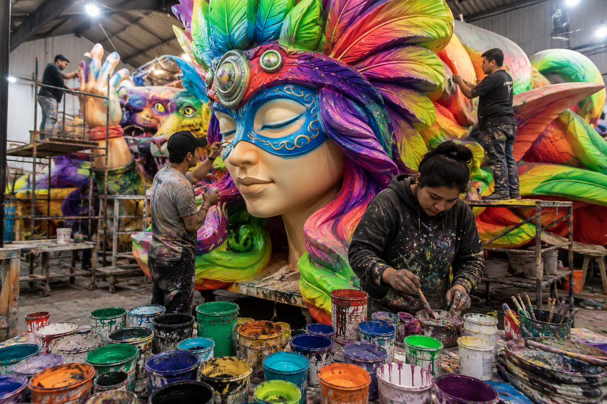

HISTORIA Y TRADICIÓN
Desde finales de diciembre, Pasto se transforma en un escenario vivo de color, memoria y tradición. Durante varios días, las calles dejan de ser rutina para convertirse en un espacio donde la música, el arte popular y la alegría colectiva conectan a miles de personas alrededor de una misma celebración.

Lo que hoy se vive como una de las fiestas culturales más importantes de Colombia nació de la mezcla entre raíces indígenas, expresiones afrodescendientes y costumbres andinas que han permanecido vivas a través del tiempo. Cada desfile, comparsa y carroza refleja el trabajo de familias enteras que han heredado sus saberes de generación en generación.
ORIGEN
Sus orígenes se remontan a celebraciones populares realizadas en el sur del país durante la época colonial. Con el paso de los años, estas expresiones culturales evolucionaron hasta convertirse en una manifestación artística y social que representa la identidad del pueblo nariñense y su diversidad cultural.


CELEBRACIÓN
Durante estas jornadas, las personas comparten pintura, música y alegría como símbolo de igualdad y unión. La tradición convierte las calles de Pasto en un espacio de encuentro colectivo donde desaparecen las diferencias.
ARTE Y CREATIVIDAD

Detrás de cada figura monumental existe un proceso creativo que puede tardar meses. Artesanos, escultores, pintores y diseñadores trabajan cuidadosamente en talleres donde la imaginación y la tradición se unen para dar vida a carrozas, máscaras y personajes que desfilan ante miles de espectadores.

Cada detalle representa una historia. Los colores, materiales y formas utilizados en las carrozas conservan símbolos propios de la región andina y reflejan la creatividad de artistas que han convertido esta celebración en un patrimonio reconocido a nivel mundial.
PATRIMONIO CULTURAL
En 2009, la UNESCO reconoció al Carnaval de Negros y Blancos como Patrimonio Cultural Inmaterial de la Humanidad, destacando su valor artístico, social y tradicional para las comunidades del sur de Colombia.